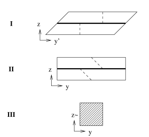

MAD-TH-07-02
Non-commutativity and Open Strings Dynamics
in Melvin Universes
Danny Dhokarh, Akikazu Hashimoto, and Sheikh Shajidul Haque
Department of Physics, University of Wisconsin, Madison, WI 53706
We compute the Moyal phase factor for open strings ending on D3-branes wrapping a NSNS Melvin universe in a decoupling limit explicitly using world sheet formalism in cylindrical coordinates.
Melvin Universe is an exact axially symmetric solution of Einstein gravity in a background with magnetic flux [1]. It arises naturally as a Kaluza-Klein reduction of twisted flat space
| (1) |
along the coordinate . The twist is parameterized by variable . The fact that is periodic makes the twist deformation physical.
Melvin universes has a natural embedding in string theory [2, 3, 4]. Simply embed (1) in 11-dimensional supergravity. Reducing along gives rise to a background in type IIA string theory with a background of magnetic RR 2-form field strength.
Along similar lines, one can embed (1) in type IIA supergravity and T-dualize along . This gives rise to a background in type IIB string theory
| (2) | |||||
| (3) | |||||
| (4) | |||||
| (5) |
with an axially symmetric magnetic NSNS 3-form field strength in the background. String theories in backgrounds like (5) are very special in that the world sheet theory is exactly solvable [5, 6, 7, 8, 9, 10]. Quantization of open strings in Melvin backgrounds have also been studied and was shown to be exactly solvable [11, 12] as well.
Embedding D-branes in Melvin universes can give rise to interesting field theories in the decoupling limit. A D3-brane extended along , , and two of the coordinates gives rise to a non-local field theory known as the “dipole” theory [13, 14]. Orienting the D3-brane to be extended along the , , , and coordinates, on the other hand, gives rise to a non-commutative gauge theory with a non-constant non-commutativity parameter111The first explicit construction of models of this type is [15].[16, 17]. These are field theories, whose Lagrangian [17] is expressed most naturally using the deformation quantization formula of Kontsevich222General construction of non-commutative field theory on curved space-time with non-constant non-commutativity parameter, arising from D-branes in non-vanishing field background, and their relation to the deformation quantization formula of Kontsevich, was first discussed in [18]. [19]. Field theories arising as a decoupling limits of various orientations of D-branes in Melvin and related closed string backgrounds along these lines333The S-dual NCOS theories with non-constant non-commutativity parameter was studied in [20, 21]. were tabulated and classified in Table 1 of [16].444More recently, a novel non-local field theory, not included in the classification of [16], was discovered [22, 23].
To show that the decoupled field theory is a non-commutative field theory, the authors of [16] presented the following arguments:
-
Solution of the classical equations of motion of an open string traveling freely on the D3-brane with angular momentum has a dipole structure whose size is given by[16]
(9)
Another suggestive argument is the similarity between limit of critical string theory and the boundary Poisson sigma-model [25] as was pointed out, e.g., in [26]. As was emphasized in [26], however, the two theories are not to be understood as being equivalent or continuously connected. This apparent similarity therefore does not constitute a proof that the decoupled theory is a non-commutative field theory.
A physical criteria for non-commutativity is the Moyal-like phase factor in scattering amplitudes. Scattering amplitudes of open strings ending on a D-brane can be computed along the lines reviewed in [27]. In the case of the constant non-commutativity parameter, one can show very explicitly that
| (10) |
which implies that the scattering amplitudes receive corrections in the form of the Moyal phase factor [28, 29, 24]. The goal of this article is to derive the analogous statement (65) for the model of [16, 17]. Once (65) is established in polar coordinates, the connection to Kontsevich formula follows from performing a change of coordinates to the rectangular coordinate system and a non-local field redefinition as is described in [30, 17].
A useful first step in this exercise is to reproduce the master relation (10) in a slightly different formalism than what was used in [24]. Let us begin by constructing the closed string background as follows. Start with flat space
| (11) |
where and are compactified with period . Then,
-
T-dualize along the direction so that the metric becomes
(12) -
Twist by shifting the coordinates
(13) -
T-dualize on so that
(14) The open string metric associated to this background is
(15) if we scale
(16)
The transformation of the coordinates and the orientation of the branes are illustrated in figure 1. This sequence of dualities was referred to as the “Melvin shift twist” in [16].

The approach of [24] was to work directly in the duality frame III, but one can just as easily work in a framework which makes the T-duality between duality frame II and III manifest, by working with a sigma model of the form
| (17) |
where we have chosen to work in conformal gauge in Eucledian signature. This action utilizes the Bushar’s formulation of T-duality [31]. To see this more explicitly, consider integrating out the field . This imposes the constraint
| (18) |
which brings the action (17) into the form
| (19) |
which is the sigma model for the duality frame II. On the other hand, integrating out first gives rise to a sigma model of the form
| (20) |
which is the string action for the duality frame III.
In extracting non-commutative gauge theory as a decoupling limit, we are interested in embedding a D-brane extended along the and coordinates in the duality frame III. We must therefore take the sigma model to be defined on a Riemann surface with one boundary, which we take to be the upper half plane. It is also necessary to impose the appropriate boundary condition for all of the world sheet fields. We impose the boundary condition which is free along the direction and Dirichlet along the direction:
| (21) |
| (22) |
Using the equation of motion from the variation of field
| (23) |
and (22), we infer
| (24) |
The boundary conditions (21) and (24) are precisely the boundary condition imposed in the analysis of [24].
In order to complete the derivation of (10), we add a source term
| (25) |
to the action (17). Integrating out the fields and bringing the sigma model (17) into duality frame III would lead to identical computation as what was described in [24] to derive (10). We will show below that the same conclusion can be reached using a slightly different argument which turns out to easily generalize to the case of Melvin deformed theories [16, 17].
The approach we take here is to go to the duality frame I. This brings the sigma model (17) to a simpler form
| (26) |
The field in the vertex operator now plays the role of a disorder operator of the dual field . It has the effect of shifting the Dirichlet boundary condition, incorporating the fact that strings are stretched along the direction in frames I and II. Also, the fact that the periodicity in coordinate system are twisted
| (27) |
requires an insertion of a disorder operator for the field as well. We therefore find that the source term has the form
| (28) |
The boundary condition is now simply Neumann for
| (29) |
and Dirichlet for
| (30) |
In this form, and the sector decouple, allowing their correlators to be computed separately. In order to compute the correlation functions involving order and disorder operators with boundary conditions (29) and (30), it is convenient to decompose the fields into holomorphic and anti holomorphic parts
| (31) |
| (32) |
Their correlation functions are given by
| (33) |
| (34) |
| (35) |
| (36) |
| (37) |
| (38) |
from which we infer
| (39) |
| (40) |
| (41) |
| (42) |
| (43) |
| (44) |
In terms of these correlation functions, one can easily show that
for
| (46) |
When these operators are pushed toward the boundary
| (47) |
the correlation function (S0.Ex4) reduces to
| (48) |
where , following the notation of [24], is a function which takes the values depending on the sign of . The term of order vanishes in this limit. From these results, we conclude that
| (49) |
from which the main statement (10) follows immediately.
Finally, let us discuss the generalization of (10) to D3-brane embedded into Melvin universe background (5) along the lines of [16, 17]. We will consider the simplest case of embedding (5) into bosonic string theory. For the Melvin universe background (5), it is convenient to prepare a vertex operator that corresponds to tachyons in cylindrical basis
| (50) | |||||
| (51) |
where
| (52) |
As long as are taken to satisfy the on-shell condition of the tachyon, (51) is linear combination of operators of boundary conformal dimension 1, and must itself be an operator of boundary conformal dimension one. Such construction of vertex operator as a linear superposition is similar in spirit to what was considered in [32, 33].
| (53) |
on the upper half plane. Integrating out brings this action to the form appropriate for the analogue of II
| (54) |
The vertex operators can be represented as a source term
| (55) |
where is a disorder operator. Now, if we let
| (56) |
the action becomes
| (57) |
with
| (58) |
and
| (59) |
where
| (60) |
is the disorder field for satisfying the relation
| (61) |
which follows naturally from the Busher rule applied to the fields.
This time, the problem is slightly complicated by the fact that sector is interacting. It is still the case that sector, for some fixed , is non-interacting. We will exploit this fact and do the path integral in the order where we integrate over and first. The two point function of formally has the form
| (62) |
Then, it follows that
| (63) |
from which it follows
| (64) |
in complete analogy with (40). The correlator (64) tells us that while the field-field correlator is complicated and dependent, the field/disorder field correlator stays simple and topological.
We can then proceed to compute the analogue of (48) and (49) for the operator (59) in the sector. While we do not explicitly compute the correlator which appear at order in (48), it is clear that the boundary condition forces this term to vanish as was the case in the earlier example. The term of order in the exponential can be made to take the Moyal-like form
| (65) |
which is finite in the scaling limit with
| (66) |
keeping finite. This is precisely the scaling considered in [16, 17]. The dependence on drops out for this term of order , allowing us to further path integrate over this field trivially, with the only effect of being the overall phase factor (65). This establishes that the decoupled theory of D-branes in Melvin universes considered in [16, 17] has an effective dynamics which includes the Moyal-like phase factor involving the angular momentum quantum number and the momentum . In Cartesian coordinates, this Moyal phase corresponds to a position dependent non-commutativity [16, 17]. This analysis extends straight forwardly to other simple models of position dependent non-commutativity, such as666Using the terminology of [16]. the “Melvin Null Twist” [15] and “Null Melvin Twist” [34]. It would be interesting to extend this analysis to superstrings and to consider the scattering of states other than the open string tachyon.
Acknowledgements
We would like to thank I. Ellwood and O. Ganor for discussions. This work was supported in part by the DOE grant DE-FG02-95ER40896 and funds from the University of Wisconsin.
References
- [1] M. A. Melvin, “Pure magnetic and electric geons,” Phys. Lett. 8 (1964) 65–70.
- [2] F. Dowker, J. P. Gauntlett, D. A. Kastor, and J. H. Traschen, “Pair creation of dilaton black holes,” Phys. Rev. D49 (1994) 2909–2917, hep-th/9309075.
- [3] F. Dowker, J. P. Gauntlett, S. B. Giddings, and G. T. Horowitz, “On pair creation of extremal black holes and Kaluza-Klein monopoles,” Phys. Rev. D50 (1994) 2662–2679, hep-th/9312172.
- [4] K. Behrndt, E. Bergshoeff, and B. Janssen, “Type II Duality Symmetries in Six Dimensions,” Nucl. Phys. B467 (1996) 100–126, hep-th/9512152.
- [5] J. G. Russo and A. A. Tseytlin, “Constant magnetic field in closed string theory: An Exactly solvable model,” Nucl. Phys. B448 (1995) 293–330, hep-th/9411099.
- [6] A. A. Tseytlin, “Melvin solution in string theory,” Phys. Lett. B346 (1995) 55–62, hep-th/9411198.
- [7] J. G. Russo and A. A. Tseytlin, “Exactly solvable string models of curved space-time backgrounds,” Nucl. Phys. B449 (1995) 91–145, hep-th/9502038.
- [8] A. A. Tseytlin, “Exact solutions of closed string theory,” Class. Quant. Grav. 12 (1995) 2365–2410, hep-th/9505052.
- [9] J. G. Russo and A. A. Tseytlin, “Heterotic strings in uniform magnetic field,” Nucl. Phys. B454 (1995) 164–184, hep-th/9506071.
- [10] J. G. Russo and A. A. Tseytlin, “Magnetic flux tube models in superstring theory,” Nucl. Phys. B461 (1996) 131–154, hep-th/9508068.
- [11] E. Dudas and J. Mourad, “D-branes in string theory Melvin backgrounds,” Nucl. Phys. B622 (2002) 46–72, hep-th/0110186.
- [12] T. Takayanagi and T. Uesugi, “D-branes in Melvin background,” JHEP 11 (2001) 036, hep-th/0110200.
- [13] A. Bergman and O. J. Ganor, “Dipoles, twists and noncommutative gauge theory,” JHEP 10 (2000) 018, hep-th/0008030.
- [14] A. Bergman, K. Dasgupta, O. J. Ganor, J. L. Karczmarek, and G. Rajesh, “Nonlocal field theories and their gravity duals,” Phys. Rev. D65 (2002) 066005, hep-th/0103090.
- [15] A. Hashimoto and S. Sethi, “Holography and string dynamics in time-dependent backgrounds,” Phys. Rev. Lett. 89 (2002) 261601, hep-th/0208126.
- [16] A. Hashimoto and K. Thomas, “Dualities, twists, and gauge theories with non-constant non-commutativity,” JHEP 01 (2005) 033, hep-th/0410123.
- [17] A. Hashimoto and K. Thomas, “Non-commutative gauge theory on D-branes in Melvin universes,” JHEP 01 (2006) 083, hep-th/0511197.
- [18] L. Cornalba and R. Schiappa, “Nonassociative star product deformations for D-brane worldvolumes in curved backgrounds,” Commun. Math. Phys. 225 (2002) 33–66, hep-th/0101219.
- [19] M. Kontsevich, “Deformation quantization of Poisson manifolds, I,” Lett. Math. Phys. 66 (2003) 157–216, q-alg/9709040.
- [20] R.-G. Cai, J.-X. Lu, and N. Ohta, “NCOS and D-branes in time-dependent backgrounds,” Phys. Lett. B551 (2003) 178–186, hep-th/0210206.
- [21] R.-G. Cai and N. Ohta, “Holography and D3-branes in Melvin universes,” Phys. Rev. D73 (2006) 106009, hep-th/0601044.
- [22] O. J. Ganor, “A new Lorentz violating nonlocal field theory from string theory,” hep-th/0609107.
- [23] O. J. Ganor, A. Hashimoto, S. Jue, B. S. Kim, and A. Ndirango, “Aspects of Puff Field Theory,” hep-th/0702030.
- [24] N. Seiberg and E. Witten, “String theory and noncommutative geometry,” JHEP 09 (1999) 032, hep-th/9908142.
- [25] A. S. Cattaneo and G. Felder, “A path integral approach to the Kontsevich quantization formula,” Commun. Math. Phys. 212 (2000) 591–611, math.qa/9902090.
- [26] L. Baulieu, A. S. Losev, and N. A. Nekrasov, “Target space symmetries in topological theories. I,” JHEP 02 (2002) 021, hep-th/0106042.
- [27] A. Hashimoto and I. R. Klebanov, “Scattering of strings from D-branes,” Nucl. Phys. Proc. Suppl. 55B (1997) 118–133, hep-th/9611214.
- [28] C.-S. Chu and P.-M. Ho, “Noncommutative open string and D-brane,” Nucl. Phys. B550 (1999) 151–168, hep-th/9812219.
- [29] V. Schomerus, “D-branes and deformation quantization,” JHEP 06 (1999) 030, hep-th/9903205.
- [30] B. L. Cerchiai, “The Seiberg-Witten map for a time-dependent background,” JHEP 06 (2003) 056, hep-th/0304030.
- [31] T. H. Buscher, “Path integral derivation of quantum duality in nonlinear sigma models,” Phys. Lett. B201 (1988) 466.
- [32] H. Liu, G. W. Moore, and N. Seiberg, “Strings in a time-dependent orbifold,” JHEP 06 (2002) 045, hep-th/0204168.
- [33] H. Liu, G. W. Moore, and N. Seiberg, “Strings in time-dependent orbifolds,” JHEP 10 (2002) 031, hep-th/0206182.
- [34] L. Dolan and C. R. Nappi, “Noncommutativity in a time-dependent background,” Phys. Lett. B551 (2003) 369–377, hep-th/0210030.